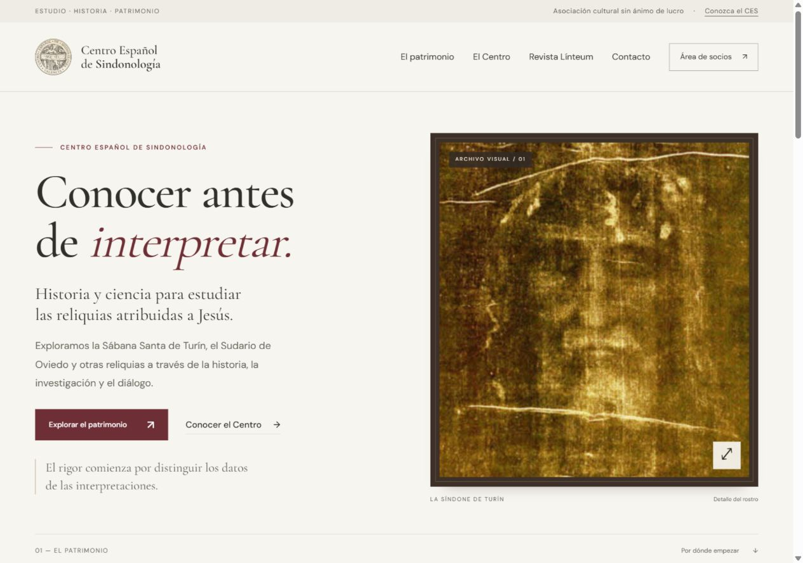
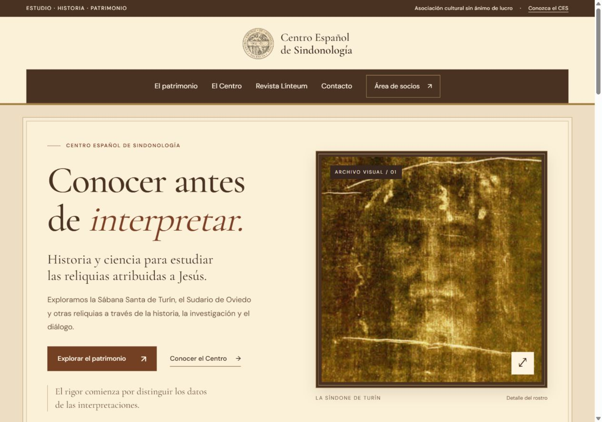
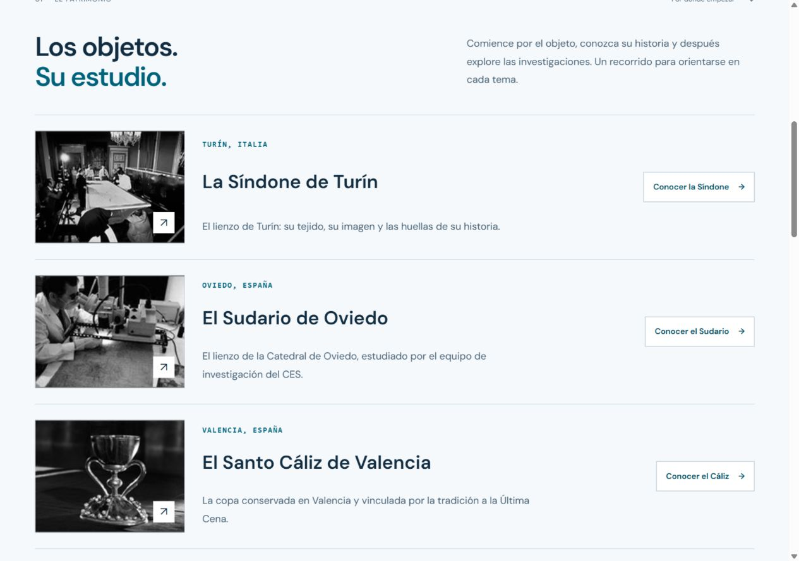
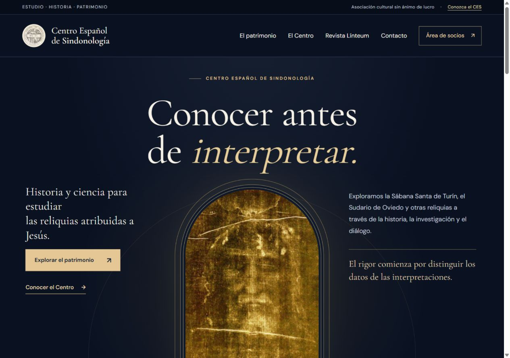

DESIGN 01
Archive and serenity.
Ivory, burgundy and an editorial layout. The most restrained and serene proposal.
View design 1PROPOSALS FOR THE SPANISH CENTRE FOR SINDONOLOGY
Four proposals for Línteum, with the same content and features. Different layouts, colours and perspectives.

DESIGN 01
Ivory, burgundy and an editorial layout. The most restrained and serene proposal.
View design 1
DESIGN 02
Cream, ochre and earth tones. An evolution close to the current website’s visual identity.
View design 2
DESIGN 03
Deep blue, white and a catalogue structure. A perspective focused on analysis and clarity.
View design 3
DESIGN 04
Midnight blue, golden light and forms inspired by sacred architecture. A contemplative and radically different proposal.
View design 4